Now, let us use this understanding of long division to find the value of \(1325 \div 4\).
\(1325 \div 4 \rightarrow\) Divide 1325 into 4 equal parts.
We can follow the same steps as in the previous problem.
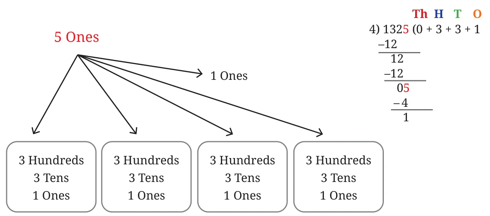
We are left with 1 Ones.
It is not clear how to divide 1 Ones into 4 equal parts. But we can regroup this as 10 tenths.
10 Tenths
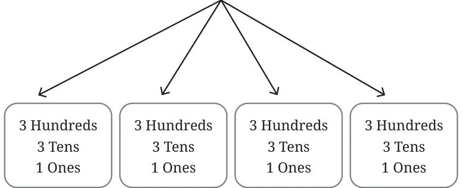
\(10 \text{ Tenths} \div 4 \rightarrow\) Each part gets 2 Tenths and 2 Tenths remain.
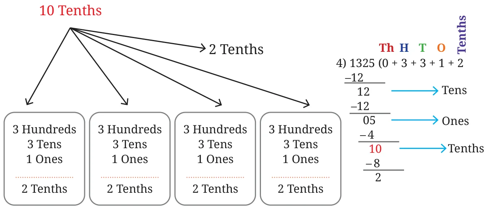
We are left with 2 tenths.
To divide 2 Tenths into 4 equal parts, we have to regroup them as 20 Hundredths.
20 Hundredths
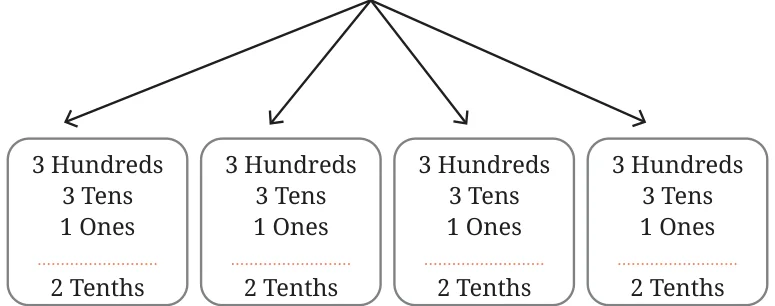
\(20 \text{ Hundredths} \div 4 \rightarrow\) Each part gets 5 Hundredths.
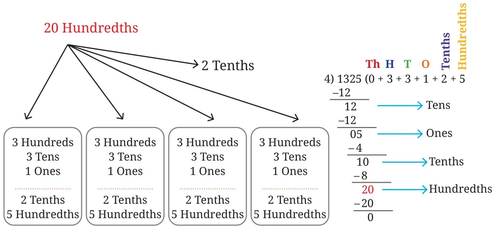
So, \(1325 \div 4 = 0\) Thousands \(+\; 3\) Hundreds \(+\; 3\) Tens \(+\; 1\) Ones \(+\; 2\) Tenths \(+\; 5\) Hundredths. This we know is 331.25, thus,
\(1325 \div 4 = 331.25\).
Can we verify this by finding an equivalent fraction for \(\frac{1325}{4}\)?
To get an equivalent fraction such that the denominator is of the form 1, 10, 100, 1000, and so on, we can multiply the numerator and denominator by 25.
\(\frac{1325 \times 25}{4 \times 25} = \frac{33125}{100} = 331.25\).
Thus, the procedure of division using place value can be extended to find quotients with decimal values. Ones can be regrouped as tenths, tenths can be regrouped as hundredths and so on.
Example 9 : Find the value of \(237 \div 8\).
\(237 \div 8 \rightarrow\) Divide 2 Hundreds \(+\; 3\) Tens \(+\; 7\) Ones into 8 equal parts.
To divide 2 Hundred into 8 equal parts we need to regrouped them as 20 Tens.
\(20 \text{ Tens} + 3 \text{ Tens} = 23 \text{ Tens}.\)
\(23 \text{ Tens} \div 8 \rightarrow 2 \text{ Tens},\) and 7 Tens remain.
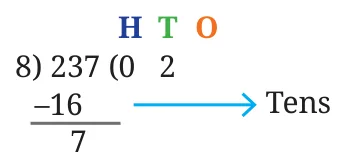
7 Tens can be regrouped as 70 Ones.
\(70 \text{ Ones} + 7 \text{ Ones} = 77 \text{ Ones}.\)
\(77 \text{ Ones} \div 8 \rightarrow 9 \text{ Ones},\) and 5 Ones remain.
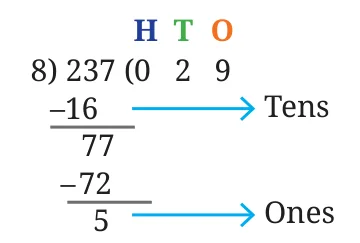
To divide 5 Ones into 8 equal parts we need to regroup them as 50 Tenths.
When we regroup Ones into Tenths, we place a decimal point in the quotient.
\(50 \text{ Tenths} \div 8 \rightarrow 6 \text{ Tenths},\) and 2 Tenths remain.
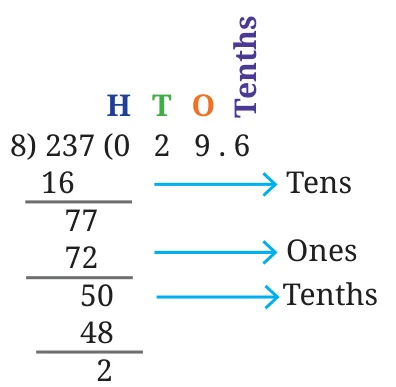
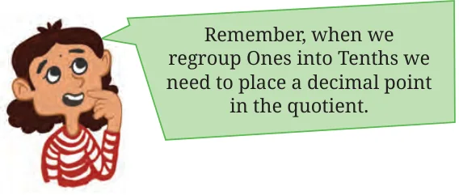
2 Tenths cannot be divided into 8 equal parts. So we need to regroup them as 20 Hundredths.
\(20 \text{ Hundredths} \div 8 \rightarrow 2 \text{ Hundredths},\) and 4 Hundredths remain.
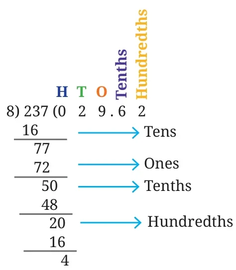
To divide 4 Hundredths into 8 equal parts we need to regroup them as 40 Thousandths.
\(40 \text{ Thousandths} \div 8 \rightarrow 5 \text{ Thousandths}.\)
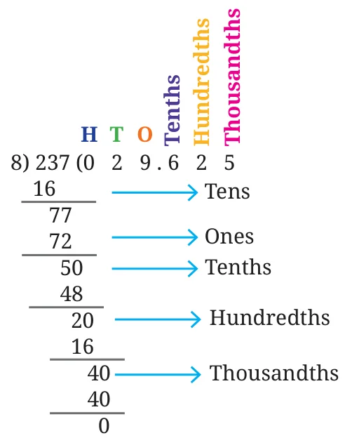
Thus, \(237 \div 8 = 29.625\).